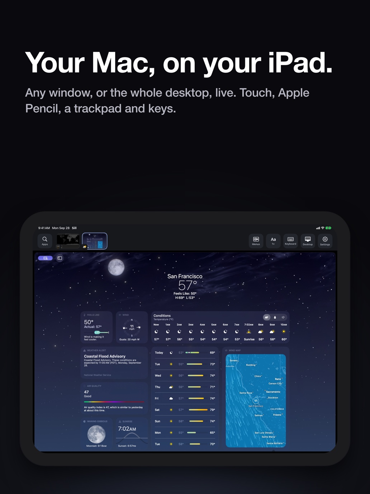

Sill
A free app that puts any Mac window on your iPhone or iPad, with full touch control.
Streams your Mac's screen to your phone or tablet so you can tap, swipe, draw with Apple Pencil and type - useful for checking a dashboard from the couch or sketching in Procreate on an iPad while the Mac does the heavy lifting.

How does it work?
Your Mac app is on one screen, but you need to see or touch it from somewhere else.
You open Sill on your Mac and tap the window you want to share.
Click the Sill menu-bar icon, pick a window or the whole desktop.
The Mac window you chose, streamed as encrypted video.
Your Weather app, a spreadsheet, or your full desktop.
Sill captures, compresses and sends the picture in real time.
- Captures the window with macOS ScreenCaptureKit and encodes it as HEVC video.
- Sends the encrypted stream over Wi-Fi, USB, or a direct wireless link to your device.
- Receives your taps, swipes, Pencil strokes and keyboard input and sends them back to the Mac.
You see and control your Mac window on your iPhone or iPad.
- A live picture of the Mac windowUp to 120 frames per second on ProMotion displays, at quality presets from 4 to 150 megabits per second.
- Full control by touch, Pencil, trackpad and keyboardThree-finger swipe opens Mission Control; Apple Pencil draws in any Mac app that accepts a mouse.
- Two-way clipboardCopy text on the Mac, paste it on the iPad (up to 256 KB at a time).
What changes for me?
Without it
- You walk away from your desk and lose sight of what's on the Mac screen.
- Paid tools like Luna Display ($130) or Duet ($4/month) add an account, a subscription, and a cloud relay.
- Apple's built-in screen sharing is full-desktop only and doesn't support touch.
With it
- Pick one window and see it on your phone, with touch control, from anywhere on the same network.
- No account, no subscription, no cloud server - the stream goes directly from Mac to device.
- Works over USB, Wi-Fi, direct wireless, or your own VPN (like Tailscale) when you're away from home.
How hard is it to try?
Effort
- Download Sill for Mac (about 3 MB) and drag it to Applications. Allow Screen Recording and Accessibility when asked.
- Install Sill on your iPhone or iPad from the App Store (free).
- Launch Sill on both devices, tap your Mac's name on the phone, scan the pairing code, then pick any window to stream.
What it takes on your computer
- Space on disk
- About 3 MB for the Mac app (DMG), plus the free iOS app from the App Store.
- Memory while it runs
- no data found
- Runs on
- Apple silicon Mac on macOS 14 or later; iPhone or iPad on iOS/iPadOS 17 or later. No Windows, Linux, or Android support.
Paste this into Claude Code. It runs your safety scan first, then a 10-minute test.
/skillspector https://github.com/Saffsanity/sill (Sill is a native Mac + iOS app - install from https://getsill.app/download for Mac and the App Store for iPhone/iPad, then pair the devices on the same network.)
Should I?
Great if you...
- Mac users who want a free second screen on their iPhone or iPad without a subscription.
- Anyone who needs to check a Mac window from the couch or another room.
- iPad users who want to control Mac apps with touch or Apple Pencil.
Skip it if...
- You don't have both a Mac and an iPhone or iPad - it's Apple-only.
- You need audio streaming - Sill doesn't send sound.
- You need multiple windows at once - Sill streams one window or the whole desktop, not both.
Instead, you could look at
- Luna DisplayHardware dongle ($130) that turns an iPad into a full Mac display with touch. More features, but not free.
- Duet DisplaySubscription app ($4/month) for a second display on iPad, Android, or another computer.
Is it safe?
- Security advisories: 0GitHub's advisory list, checked Oct 23
- Searches for CVEs, vulnerabilities, malware and scams20 results read, including the national CVE database: nothing found
- Are the stars earned?3.9K stars, 8 contributors, 722 commits
Watch out for
- Single developer. Noah Saffer is the sole named maintainer. If he stops, updates stop.
- Uses a private macOS API. The optional virtual display feature uses an undocumented Apple interface. A future macOS update could break it, and Apple won't put the Mac app in the App Store because of it.
- No audio. Sill streams video only - no Mac sound on the device. The developer has not announced plans for audio.
- 31 days old. The first release was Sep 22, 2026. Expect rough edges.
Who's using it, and for what?
Sill is 31 days old. Real use evidence is early - most coverage is feature reporting, not hands-on reviews.
We couldn't find anyone describing real use of it yet. That's normal for a brand-new repo, and it's worth knowing.
Who's talking about it
- Hacker NewsAny window from your Mac, on your iPhone and iPad
- iThinkDifferentSill Puts Any Mac App on Your iPhone or iPad for Free
- Geeky GadgetsSill stream Mac to iPad
- TrendshiftSaffsanity/sill trending #30 daily and monthly
Sources
- Sill GitHub repo, Oct 23
- Sill website, Oct 23
- Sill Releases (v0.5.1), Oct 23
- Hacker News discussion (273 pts), Oct 16
- iThinkDifferent coverage, Oct 14
- Geeky Gadgets coverage, Oct 16
- Trendshift listing, Oct 23